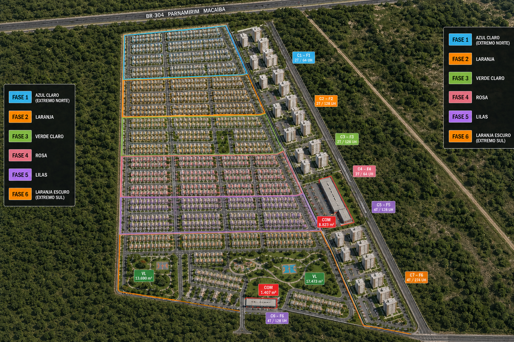

APRESENTAÇÃO ESTRATÉGICA
DUO INCORPORAÇÕES
INTRODUÇÃO · ROTEIRO DESTA APRESENTAÇÃO
O que você vai ver nesta apresentação
Um roteiro em 3 pilares — do panorama de mercado ao desenho da estrutura organizacional da DUO.
Panorama de Mercado
Onde o MCMV está — e para onde vai nos próximos 5 anos
Cenário RN × Brasil, projeção de 5 anos, correlação político-econômica e cenários eleitorais 2026, com dados de campo em Natal/RN.
Plano de Desenvolvimento MCMV
Parque América e Cidade Macaíba
Por que Macaíba, o terreno georreferenciado, o cronograma de implantação e a DRE consolidada.
Estrutura Organizacional
Como a DUO precisa ser organizada
Estrutura mínima do NUPE, custo da estrutura, escala da equipe e organograma.
PILAR 1 · DÉFICIT HABITACIONAL
O Rio Grande do Norte carrega um déficit estrutural de ~200 mil unidades
| Município | Déficit estimado | % do total RN | Faixa prioritária |
|---|---|---|---|
| Natal | 52.000 un. | 26% | Faixa 2/3 |
| Macaíba | 18.000 un. | 9% | Faixa 1/2 |
| Parnamirim | 24.000 un. | 12% | Faixa 2/3 |
| São Gonçalo do Amarante | 14.000 un. | 7% | Faixa 1/2 |
| Mossoró | 22.000 un. | 11% | Faixa 1/2 |
| Demais municípios RN | 70.000 un. | 35% | Faixa 1 |
| Total RN | ~200.000 un. | 100% | — |
Déficit estimado por município — RN (un.)
73% do déficit concentra-se em famílias de até 3 SM e 62% está na Grande Natal — mas Macaíba já cresce 3,2%/aa (2015–2024), acima da média metropolitana. A demanda tem contrapartida em oferta: no 1T2026, 100% dos lançamentos verticais em Natal foram MCMV, com vendas do segmento saltando +314% no trimestre (7→29 un.).
Déficit habitacional Faixa 1 — Oportunidade Estrutural no RN: ~200 mil unidades estimadas (73% em famílias até 3 SM; 62% na Grande Natal); crescimento populacional de Macaíba de 3,2%/aa, 2015–2024 (DUO-Apresentação-Estratégica-CEO-R08.pptx, slide 8/37). Fonte: BRain Pesquisas Imobiliárias — Natal e RM, Março/2026 (Panorama 1T2026 + Base CONSOLIDADA); contratações históricas 2019–2024: CEF/CBIC. PPTX fonte: DUO-Apresentação-Estratégica-CEO-R08.
PILAR 1 · PROJEÇÃO 5 ANOS
O MCMV é o segmento mais blindado ao ciclo de juros Focus BCB 2026–2030
Trajetória realizada 2020 → 2026 (%)
Série históricaA Selic saiu de 2% (mínima histórica, 2020) para 15% (2025) no ciclo de aperto pós-pandemia, com pico de IPCA em 10,06% (2021); o crédito MCMV é taxa fixa subsidiada (4,5–5,5% a.a.), blindado a esse ciclo em todo o período.
Fontes: Selic — decisões de dezembro do Copom/BCB (2020–2025); IPCA e PIB — IBGE, índice fechado e Contas Nacionais (valores revisados mais recentes); 2026 = mesma projeção Focus/BCB do gráfico ao lado.
Trajetória projetada 2026 → 2030 (%)
Cenário atualA Selic recua de 14% para 10% no horizonte; o crédito MCMV é taxa fixa subsidiada (4,5–5,5% a.a.), blindado a esse ciclo. IPCA converge e o PIB fica estável em ~2%.
Fonte: Boletim Focus/BCB, edição 03/07/2026.
Achado ao vivo: em 16/06/2026, os juros futuros SUBIRAM em reação a pesquisa CNT/MDA mostrando Lula ampliando vantagem — o mercado precifica continuidade política como pressão sobre a Selic. O crédito MCMV é taxa fixa subsidiada (4,5–5,5% a.a.), ortogonal a esse ciclo. Nos 3 cenários de stress-test do R07 (Base/Esquerda/Direita), o cenário "Esquerda" aponta o MCMV como vetor dominante do mercado. Fontes: Focus/BCB 03/07/2026; InfoMoney e Folha de S.Paulo, 16/06/2026; R07.html §3.
PILAR 1 · CENÁRIOS ELEITORAIS
Sensibilidade à eleição presidencial de 2026
O subsídio do MCMV (Faixa 1) é definido pelo governo federal — a leitura abaixo parte do histórico real de cada candidatura com habitação popular.
Cenário A · relançado 2023 → projeção 2027+ (R$ bi/ano)
Criado em 2009, relançado em 2023 — hoje 2,27 mi/3 mi unidades da meta (R$ 300 bi financiados), FGTS R$ 144,5 bi alocado. 2026: contratações +28,7% RN / +10,8% Brasil (acum. 6M26).
Cenário B · execução direta caiu ano a ano, 2020-22 (R$ bi/ano)
Casa Verde e Amarela substituiu o MCMV — contratações Faixa 1 perto de zero em 2021. 2019 (1º ano Bolsonaro) sem valor divulgado, não plotado.
Despesa parcialmente discricionária: Orçamento 2026 já teve R$ 1,6 bi bloqueados por pressão fiscal (mar/2026). Demanda de Faixa 1-2 sustentada e subsídio robusto → tende a VSO alto no MCMV de Macaíba.
Debate hoje é de crítica cruzada, sem proposta nova da oposição — em 03/07/2026 Lula cobrou publicamente as entregas do Casa Verde e Amarela. Mitigação por mix de faixas 1-3 e âncora no RN+ Moradia (estadual, ICMS).
Fontes: Ministério das Cidades — LOA e execução orçamentária (habitação); Caixa (contratações MCMV / Faixa 1); RE Brasil Dashboard (FGTS/MCMV, acum. 6M26); TSE (calendário 2026); cobertura de imprensa 2020-2026. Dados novos pesquisados nesta revisão (08/07/2026): bloqueio de R$ 1,6 bi no Orçamento 2026 por arcabouço fiscal — CNN Brasil e Jornal de Brasília (mar/2026); MCMV em 2,27 mi de unidades / R$ 300 bi financiados rumo à meta de 3 milhões — Agência Brasil (2026); crítica pública de Lula a Flávio Bolsonaro sobre entregas do Casa Verde e Amarela — Revista Fórum (03/07/2026). Rogério Marinho, que encerrou a Faixa 1 no ciclo 2019-22, hoje coordena a articulação da oposição. Nota de escopo: R$4,8→2,7→1bi (painel B) é execução orçamentária direta da pasta de Habitação; ≈R$180bi/ano (painel A) é o total mobilizado em orçamento + financiamento (crédito/FGTS/SBPE) do MCMV — escopos e ordens de grandeza diferentes, por isso em painéis e eixos separados. Cenários = leitura de histórico, não previsão.
PILAR 1 · NATAL/RN NO CICLO
Dados de campo 1T2026
| Ano | Contratações RN (un.) | Investimento (R$ M) | Var. Anual |
|---|---|---|---|
| 2019 | 4.200 | 560 | — |
| 2020 | 2.800 | 390 | −33% |
| 2021 | 3.600 | 510 | +29% |
| 2022 | 5.100 | 730 | +42% |
| 2023 | 7.800 | 1.180 | +53% |
| 2024 | 9.200 | 1.450 | +18% |
| 2025 (proj.) | 11.000 | 1.800 | +20% |
Contratações MCMV — RN, 2019–2025 (mil un./ano)
Trajetória estrutural: de 4.200 un. (2019) a 11.000 un. projetadas em 2025 (+162% em 6 anos), com única queda em 2020 (pandemia, −33%). Recorte trimestral (1T2026): venda MCMV vertical em Natal +314% (7→29 un.), mas lançamentos horizontais na RM — segmento da DUO — caem −58% no período: demanda estrutural forte, oferta horizontal recente contraiu.
O MCMV é hoje o segmento de giro mais rápido em Natal/RN: IVV de 24,2% — o maior do mercado potiguar, à frente do padrão médio (13,5%) — Censo Imobiliário 1T2026 (Brain Inteligência Estratégica, encomendado por Sinduscon-RN/Sebrae-RN, republicado pela FIERN em 11/06/2026). Contratações MCMV no RN saltam de 4.200 un. (2019) a 11.000 un. projetadas em 2025 (+162% em 6 anos), com a única queda em 2020 (pandemia, −33%). No 1T2026, vendas MCMV vertical em Natal crescem +314% (7→29 un.), mas os lançamentos horizontais na RM (o segmento da DUO) caem −58% no mesmo período — janela de oferta, não de demanda. Fontes: BRain Pesquisas Imobiliárias, Panorama Natal e RM (DUO-Apresentação-Estratégica-CEO-R08.pptx, slides 10–11/37); série 2019–2024 cruzada com CEF/CBIC; IVV: Censo Imobiliário FIERN/Brain, 1T2026.
PLANO DE DESENVOLVIMENTO MCMV
Parque América e Cidade Macaíba
MVP · Fase 1 · Validação do modelo SPE 50/50 · Goianinha / RN
Parque América
Goianinha/RN · 30 casas MCMV Faixa 1
VGV de R$ 4,74 milhões · SPE 50/50 DUO + "Atta"
Resultado projetado de R$ 510.800 (margem 22%).
| Especificação | Valor |
|---|---|
| Localização | Goianinha/RN |
| Produto | 30 casas · MCMV Faixa 1 |
| Preço unitário | R$ 158.000 |
| Estrutura societária | SPE 50/50 · DUO + "Atta" |
| Fase | Fase 1 (30 casas) |
| Status | Aprovação em andamento · terreno adquirido · lançamento previsto para agosto/2026 |
Parque América é o MVP que valida o modelo de SPE 50/50 — se performar, vira o template replicado em Cidade Macaíba. ⚠ "Atta" é o parceiro citado na SPE (fonte: R08.pptx, jun/2026); não está confirmado se é a mesma empresa referida como "W3" num MoU de março — não assumir que são o mesmo. Fonte: DUO-Apresentação-Estratégica-CEO-R08.pptx, slide 15.
Motor de escala MCMV · Macaíba / RN
Cidade Macaíba
822.205 m² · 6 fases · 2.101 lotes residenciais
+ 2 lotes comerciais + 1.280 UH MCMV.
VGV de R$ 425 milhões com margem líquida de 27%.
| Local | Qtde Lotes | Frente (m) | Fundo (m) | Área Unit. (m²) | Área Total (m²) |
|---|---|---|---|---|---|
| Faz. Recanto | 552 | 8,00 | 18,00 | 144,00 | 79.488,00 |
| Faz. Macaíba | 1.549 | 10,00 | 20,00 | 200,00 | 309.800,00 |
| TOTAIS | 2.101 | — | — | 185,29 | 389.288,00 |
Fonte: estudo de viabilidade detalhada Cidade Macaíba — V16 (DUO / Judson). Indicadores (VGV, margem EBIT, lucro líquido, exposição de caixa) conforme planilha V16.
PILAR 2 · POR QUE MACAÍBA
Macaíba é a única praça onde a DUO chega primeiro-movedora
| Município | VSO médio | Nº empr. ativos | Leitura competitiva |
|---|---|---|---|
| Natal | 76,0% | 186 | Competitivo, disputado |
| Parnamirim | 85,5% | 106 | Médio, em aquecimento |
| São Gonçalo do Amarante | 95,4% | 11 | Alto giro, poucos players |
| Macaíba | 95,4% | 3 | Primeiro-movedor |
VSO médio por município (%)
Macaíba (laranja) empata no maior VSO da região (95,4%) com apenas 3 empreendimentos ativos — mercado quente e vazio de concorrência. É a única praça onde a DUO chega primeiro-movedora.
Janela estimada de 12–18 meses antes da entrada de concorrentes na praça. Ticket médio econômico da RM (R$ 210 mil) fica acima do teto da Faixa 1 (R$ 190 mil) — um nicho sem cobertura adequada, exatamente o produto DUO (lotes + casas Faixa 1). Fonte: Brain Inteligência Estratégica, Panorama Natal e RM, mar/2026 (via DUO-Apresentação-Estratégica-CEO-R08.pptx, jun/2026).
PILAR 2 · TERRENO GEORREFERENCIADO
Onde fica o terreno — Cidade Macaíba, RN
Vista de satélite · arraste e use a rolagem para explorar
Base de satélite Esri (padrão do estudo Hermes) · poligonal real do lote, extraída do levantamento georreferenciado.
Fonte: poligonal — DWG oficial "macaiba_unificado_v1.dwg" (Fazenda Santo André + Fazenda do Recanto, corrigido em 2026-07-08). Base cartográfica: Esri World Imagery (Maxar, Earthstar Geographics). Pendência: VGV de R$ 139,8 mi ao lado ainda reflete a área antiga — recalcular com Judson/Gustavo assumindo a área correta (110,82 ha) antes de publicar.
PILAR 2 · CRONOGRAMA DE IMPLANTAÇÃO
Composição do VGV por Segmento — Cronograma de Implantação
Cronograma de Implantação — Semestres
| Fase | Setor | S2/2027 | S1/2028 | S2/2028 | S1/2029 | S2/2029 | S1/2030 | S2/2030 | S1/2031 | S2/2031 | S1/2032 | S2/2032 |
|---|---|---|---|---|---|---|---|---|---|---|---|---|
| F1 | BR-304 (Frontagem Comercial) | Obra | Obra | Obra | Obra | Obra | Entrega | |||||
| F2 | Setor Norte | Obra | Obra | Obra | Obra | Obra | Entrega | |||||
| F3 | Setor Central Norte | Obra | Obra | Obra | Obra | Obra | Entrega | |||||
| F4 | Setor Central Sul | Obra | Obra | Obra | Obra | Obra | Entrega | |||||
| F5 | Setor Sul | Obra | Obra | Obra | Obra | Obra | Entrega | |||||
| F6 | Fundos / Setor Industrial | Obra | Obra | Obra | Obra | Obra | Entrega |

Fonte: Planilha Viabilidade-Cidade-Macaíba — V16 (28/05/2026, DUO / Judson), abas "Composição de VGV" e "Cronograma de Implantação".
DRE CONSOLIDADA · BLOCO 4 · V16
Demonstrativo de Resultado Consolidado — Cidade Macaíba
| Cód | Item | F1 | F2 | F3 | F4 | F5 | F6 | CONSOL. | % ROL | % ROB |
|---|---|---|---|---|---|---|---|---|---|---|
| 01. | RECEITA OPERACIONAL BRUTA | R$ 126.327.400 | R$ 45.700.000 | R$ 45.700.000 | R$ 45.700.000 | R$ 80.900.000 | R$ 80.930.000 | R$ 425.257.400 | 105.3% | 100.0% |
| 01.1 | Receita de Vendas | R$ 126.327.400 | R$ 45.700.000 | R$ 45.700.000 | R$ 45.700.000 | R$ 80.900.000 | R$ 80.930.000 | R$ 425.257.400 | 105.3% | 100.0% |
| 01.3 | Inadimplência | -R$ 6.316.370 | -R$ 2.285.000 | -R$ 2.285.000 | -R$ 2.285.000 | -R$ 4.045.000 | -R$ 4.046.500 | -R$ 21.262.870 | -5.3% | -5.0% |
| 02. | RECEITA OPERACIONAL LÍQUIDA | R$ 120.011.030 | R$ 43.415.000 | R$ 43.415.000 | R$ 43.415.000 | R$ 76.855.000 | R$ 76.883.500 | R$ 403.994.530 | 100.0% | 95.0% |
| 02.1 | Custo de Construção | -R$ 47.843.675 | -R$ 23.396.941 | -R$ 23.399.768 | -R$ 23.399.768 | -R$ 44.106.215 | -R$ 44.111.969 | -R$ 206.258.337 | -51.1% | -48.5% |
| 02.3 | Terreno (permuta financeira) | -R$ 10.106.192 | -R$ 3.656.000 | -R$ 3.656.000 | -R$ 3.656.000 | -R$ 6.472.000 | -R$ 6.474.400 | -R$ 34.020.592 | -8.4% | -8.0% |
| 02.5 | Custo de Incorporação | -R$ 1.263.274 | -R$ 457.000 | -R$ 457.000 | -R$ 457.000 | -R$ 809.000 | -R$ 809.300 | -R$ 4.252.574 | -1.1% | -1.0% |
| 03. | LUCRO BRUTO | R$ 60.797.889 | R$ 15.905.059 | R$ 15.902.232 | R$ 15.902.232 | R$ 25.467.785 | R$ 25.487.831 | R$ 159.463.027 | 39.5% | 37.5% |
| 03.1 | Desp. Comerciais | -R$ 6.316.370 | -R$ 2.285.000 | -R$ 2.285.000 | -R$ 2.285.000 | -R$ 4.045.000 | -R$ 4.046.500 | -R$ 21.262.870 | -5.3% | -5.0% |
| 03.2 | Desp. de Marketing | -R$ 1.263.274 | -R$ 457.000 | -R$ 457.000 | -R$ 457.000 | -R$ 809.000 | -R$ 809.300 | -R$ 4.252.574 | -1.1% | -1.0% |
| 03.3 | Desp. de bonificação ao cliente | -R$ 631.637 | -R$ 228.500 | -R$ 228.500 | -R$ 228.500 | -R$ 404.500 | -R$ 404.650 | -R$ 2.126.287 | -0.5% | -0.5% |
| 03.4 | Desp. Administrativas | -R$ 3.789.822 | -R$ 1.371.000 | -R$ 1.371.000 | -R$ 1.371.000 | -R$ 2.427.000 | -R$ 2.427.900 | -R$ 12.757.722 | -3.2% | -3.0% |
| 04. | EBIT | R$ 48.796.786 | R$ 11.563.559 | R$ 11.560.732 | R$ 11.560.732 | R$ 17.782.285 | R$ 17.799.481 | R$ 119.063.574 | 29.5% | 28.0% |
| 05. | EBIT AJUSTADO | R$ 48.796.786 | R$ 11.563.559 | R$ 11.560.732 | R$ 11.560.732 | R$ 17.782.285 | R$ 17.799.481 | R$ 119.063.574 | 29.5% | 28.0% |
| 05.1 | IR e CSLL (RET 4%) | -R$ 1.200.110 | -R$ 434.150 | -R$ 434.150 | -R$ 434.150 | -R$ 768.550 | -R$ 768.835 | -R$ 4.039.945 | -1.0% | -0.9% |
| 06. | LUCRO LÍQUIDO (LL) | R$ 47.596.675 | R$ 11.129.409 | R$ 11.126.582 | R$ 11.126.582 | R$ 17.013.735 | R$ 17.030.646 | R$ 115.023.629 | 28.5% | 27.0% |
Fonte: Planilha Viabilidade-Cidade-Macaíba-V16 · Aba DRE Projetada · Bloco 4 (Consolidado)
ESTRUTURA ORGANIZACIONAL
Como a DUO precisa ser estruturada
PILAR 3 · ESTRUTURA MÍNIMA (NUPE)
O que a DUO precisa construir para operar — e o que já tem
① Núcleo de Incorporação — o organograma a construir
-
Diretor Técnicoremuneração a definir
-
Gerente de IncorporaçõesPJ · R$ 35.000/mês · sênior MCMV
-
Analista de EngenhariaCLT · R$ 5.000 · lançamento / planejamento
- Estagiário
-
Analista de EngenhariaCLT · R$ 5.000 · obras / otimização
- Estagiário
-
-
NUPEdupla lotação — processos/orçamento p/ todo o grupo
-
Núcleo de Incorporação
ConstruirO organograma ao lado: gerente sênior + engenharia própria (2 analistas, 2 estagiários). É o coração técnico da DUO. Precisamos fazer.
CSC · Serviços Compartilhados
Já existeJurídico · Financeiro · Contratos · QSMS. Já roda no grupo — fora do escopo do NUPE, custo zero para a DUO. Vantagem que a Brisa não tem.
Área Comercial
ConstruirGerente comercial + 2–3 assistentes, estruturada 6 meses antes do lançamento + núcleo Caixa (2 pessoas). Volume MCMV exige time maior por dois motivos: giro de venda mais rápido (IVV MCMV 24,2% — o maior do mercado potiguar) gera mais vendas simultâneas; e cada venda MCMV exige uma análise de repasse bancário Caixa — processo manual e demorado por unidade — que se acumula com o volume vendido. Precisamos fazer.
Horizonte estratégico — quando cada peça precisa estar de pé
Os itens ① e ③ são o que precisamos construir; o item ② (CSC) já existe no grupo e fica fora do NUPE. Fonte: ATA de Diretoria 07/07/2026 (AURIS) — decisões DA01, DA02 e DA07.
PILAR 3 · CUSTO DA ESTRUTURA
Quanto custa manter esse time a conta que importa é a acumulada
| Papel | Regime | Custo mensal | Acum. 3m | Acum. 6m |
|---|---|---|---|---|
| Diretor Técnico | — | A definir | A definir | A definir |
| Gerente de Incorporações | PJ | R$ 35.000 | R$ 105.000 | R$ 210.000 |
| 2 Analistas de Engenharia | CLT | R$ 10.000 | R$ 30.000 | R$ 60.000 |
| 2 Estagiários | — | R$ 3.000 | R$ 9.000 | R$ 18.000 |
| Total (exceto Diretor) | — | R$ 48.000 | R$ 144.000 | R$ 288.000 |
Custo acumulado do núcleo (R$ mil) — o que o TAC precisa cobrir
Cenário simplificado — assume equipe completa desde o mês 1, só para dar ordem de grandeza; não é o cronograma real de contratação. A ATA decidiu (DA03) ler o fluxo acumulado como métrica principal — por isso a curva acima, não só o mês a mês. ⚠ Cobertura pelo TAC ainda pendente: os 3 arquivos do Arvo que trariam o modelo eram, na verdade, o plano do Brisa (Fortaleza/CE) com título trocado; nenhum número deles foi usado. Fonte: ATA Diretoria 07/07/2026 (AURIS).
PILAR 3 · ESCALA DA EQUIPE
Mais obras não significam multiplicar o time
Crescimento indexado (base 100 na 1ª fase)
| Fase (ilustrativa) | Obras simultâneas | Equipe do núcleo |
|---|---|---|
| 2027 · Parque América | 1 | 5 |
| + Cidade Macaíba | 2 | 5 |
| Consolidação | 3 | 7 |
| Escala plena | 4 | 7 |
Prospecção ilustrativa — não é cronograma de contratação. Isola a lógica de escala: o núcleo não cresce proporcional ao nº de obras porque cada função tem um teto técnico de obras simultâneas que consegue cobrir bem — Diretor Técnico: sempre 1, fixo, não escala com o nº de obras; Gerente de Incorporações: cobre até 10 obras simultâneas (não precisa de 2º gerente nesta faixa de 1–4 obras); Analista de Engenharia e Estagiário: até 2 obras simultâneas cada — por isso o núcleo só sobe em degrau ao passar de 2 para 3 obras (1 Analista + 1 Estagiário vira 2 + 2) e não cresce nada ao somar a 2ª obra. Fonte primária: régua de capacidade técnica definida pela liderança do grupo Dois A (Álvaro Marcolino), com base na experiência de gestão de obras do grupo. Não há benchmark público brasileiro (CBIC/Sinduscon/Confea/Sienge) que meça obras-por-profissional como capacidade de portfólio — as referências setoriais tratam de produtividade de mão de obra dentro de uma obra (RUP) ou de permissão legal de responsabilidade técnica (Confea nº 1.121/2019), não de carga de gestão; por isso a régua da liderança é a fonte primária e única aqui. Em escala plena o núcleo (7) converge com o recorte do R08 (item ①, Pilar 3, 7 pessoas). Números de fase são hipótese de trabalho — dependem de validação com a Diretoria.
03 Meta de longo prazo da estrutura DUO
Ambição do Grupo Dois A · horizonte 5 anos
1.000 un./ano
Estrutura pronta 6 meses antes do lançamentoMeta do Grupo para a DUO Incorporações: sair de 30 unidades no Ano 1 para 1.000 unidades/ano no Ano 3. Sozinha, Cidade Macaíba cobre 67% dessa meta — e exige que a estrutura organizacional (Pilar 3) esteja pronta com antecedência.
SÍNTESE · PRÓXIMOS PASSOS
Próximos Passos
Fonte: Apresentação Cidade Macaíba — Judson/DUO, slide de fechamento "Próximos Passos" (V16, 28/05/2026).